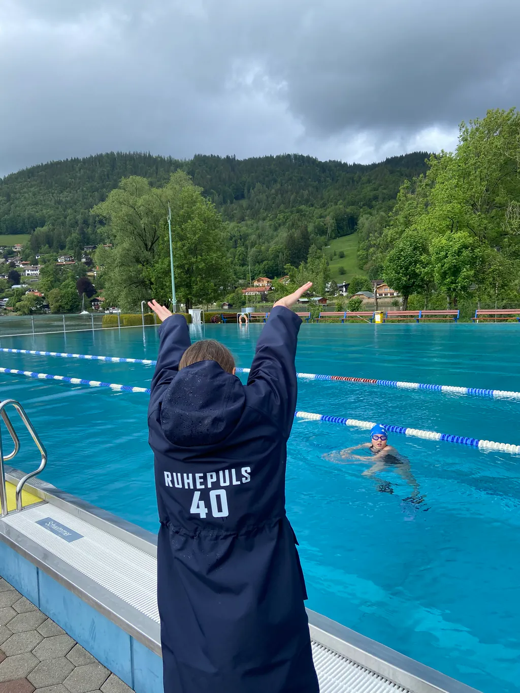
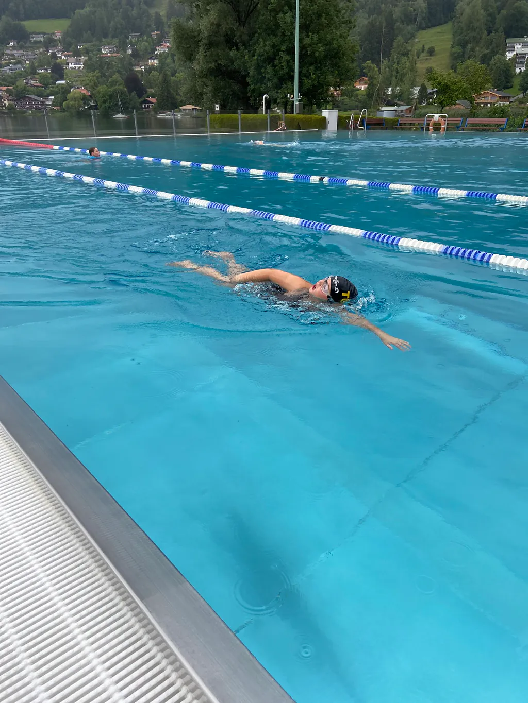
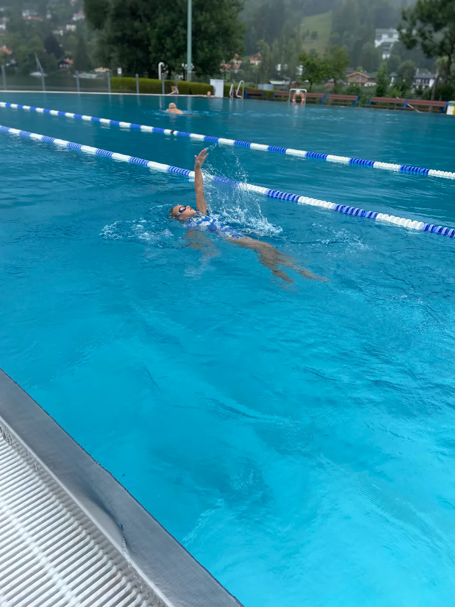
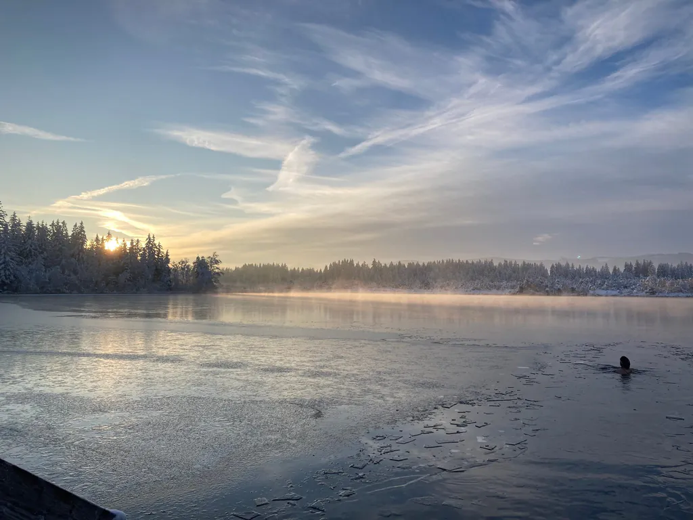
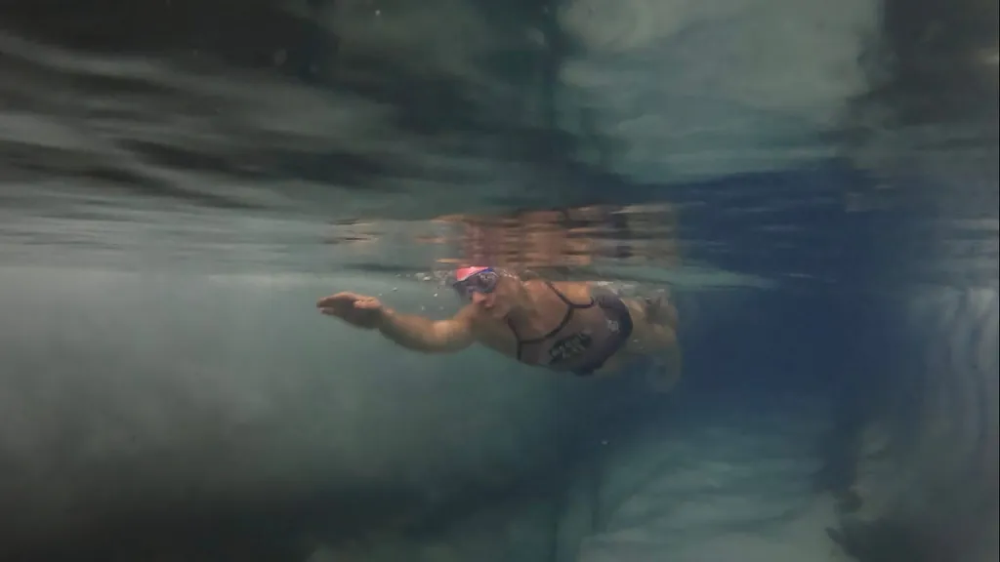
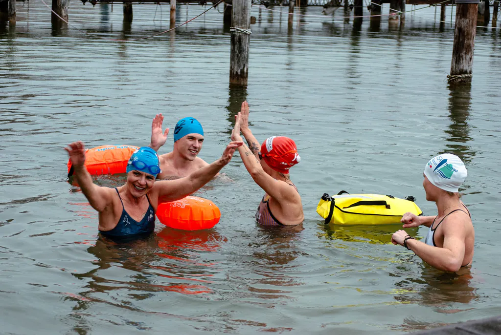
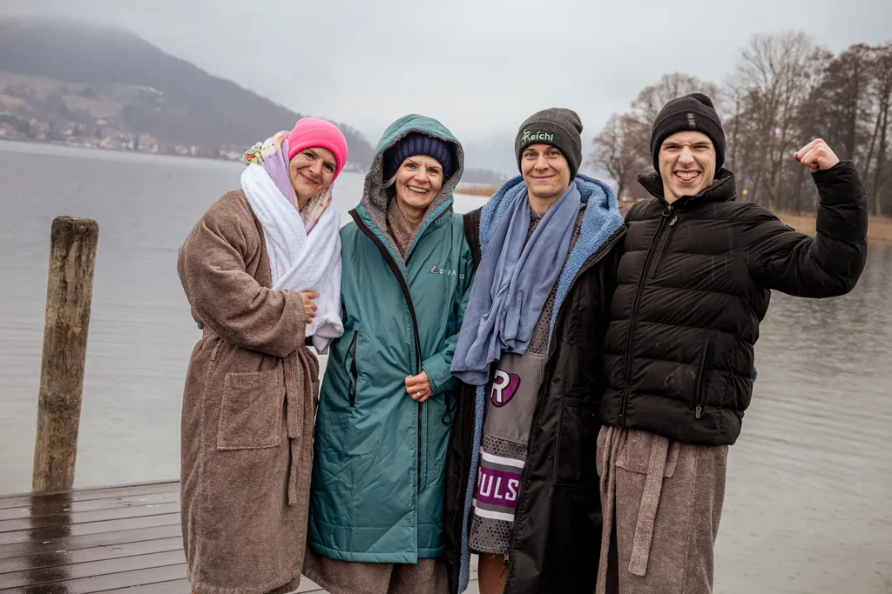

Techniktraining Schwimmen
Präzision im Wasser
Technik entscheidet darüber, wie effizient, ruhig und kontrolliert du dich im Wasser bewegst. Egal ob im Becken, im Freiwasser oder im Eis – saubere Bewegung ist die Grundlage für alles.
Bei Aqualign geht es genau darum: Alignment im Wasser. Die Verbindung aus Körper, Atmung und mentaler Ausrichtung. Wenn alles im Einklang ist, entsteht Kontrolle – unabhängig von Temperatur und Bedingungen.
Im Schwimmtraining liegt der Fokus auf Technik, Wasserlage und Effizienz. Du lernst neue Bewegungen und optimierst bestehende Muster.
Wir arbeiten mit dem Wasser, nicht dagegen!



Mögliche Inhalte
- Verbesserung der Wasserlage und Körperspannung
- Technische Optimierung aller Lagen (Kraul, Brust, Rücken, Delfin)
- Atmung unter Belastung
- Ökonomisches Schwimmen für längere Distanzen
- Individuelles Technikfeedback
Ziel ist nicht nur, schneller zu schwimmen – sondern sauberer, ruhiger und bewusster.
Kinder und Erwachsene sind gleichermaßen willkommen. Es gibt kein „zu früh" und kein „zu spät". Entscheidend ist, dass du anfängst – und bereit bist, dich zu entwickeln.
Ort & Buchung
Das Techniktraining findet im See- und Warmbad Rottach-Egern oder im Monte Mare Schliersee statt.
Trainiert wird einzeln oder zu zweit – so bleibt der Fokus vollständig auf deiner Technik.
Preise und Termine gibt es auf Anfrage.
Workshops Eisbaden
Mentale Stärke im Eis
Eisschwimmen verändert den Fokus. Im Moment des Eintauchens (schon beim großen Zeh😉) wird aus Bewegung reine Wahrnehmung – Atmung, Körper, Kontrolle.
Um genau letztere geht es bei Aqualign, nicht um Härte oder Performance. Im Vordergrund steht die Fähigkeit, unter Kältereiz ruhig zu bleiben und bewusst zu handeln.

Eiswasser & Kälte
Im Eis verschiebt sich der Fokus – mentale Kontrolle wird entscheidend. Hier geht es um:
- kontrollierte Atmung unter Kältereiz
- stabile Körperreaktion im Stressmoment
- sichere Anpassung an Kältebelastung
- ruhigen, bewussten Einstieg ins kalte Wasser
- Aufbau von Vertrauen in den eigenen Körper
Kälte zeigt sofort, wie stabil deine Grundlagen wirklich sind.
Erlebnis & Training
„Eisschwimmen bedeutet für mich glasklares Wasser, in dem Sonnenstrahlen Muster auf den Grund zeichnen. 100 % Fokus auf den Moment und die Atmung. Der Kopf wird ruhig, die Energie steigt. Jeder lernt seine Grenzen kennen, verschiebt sie Schritt für Schritt und trainiert Körper und Geist."Franziska Partheymüller
Im Eiswasser entsteht ein Zustand aus Klarheit und Präsenz. Der Kopf wird ruhig, der Körper arbeitet effizient, der Moment wird greifbar.

Ziel des Workshops
Nicht Leistung im Extrem – sondern Kontrolle im eigenen System. Du lernst:
- wie dein Körper auf Kälte reagiert
- wie du Ruhe unter Stress aufrechterhältst
- wie du dich sicher im Eiswasser bewegst
- wie mentale Stärke praktisch entsteht – nicht theoretisch
Community & Umfeld
Eisbaden ist individuell – aber nicht allein.
Die internationale Eis- und Winterschwimm-Community verbindet Menschen, die sich bewusst Herausforderungen stellen und dabei respektvoll miteinander umgehen. Genau dieser Austausch ist ein fester Bestandteil der Workshops.


Kurz gesagt
Klarheit. Kontrolle. Kälte. Und ein bewusster Umgang mit deinem Körper im Extrembereich.
Leitung
Die Workshops leitet Franziska Partheymüller – zweifache Weltmeisterin im Eisschwimmen über 50 m Brust, zertifizierte ICE-Instructorin und Notfallsanitäterin. Mehr über Franziska
Ort & Buchung
Die Eisbade-Workshops finden am Hotel Terrassenhof in Bad Wiessee am Tegernsee statt.
Wir arbeiten bewusst in kleinen Gruppen – vom 1:1-Workshop bis zu etwa fünf Personen. So bleibt genug Raum, um jede und jeden einzeln zu begleiten.
Wochenend-Workshop mit Hotelaufenthalt
Der Wochenend-Workshop wird gemeinsam mit dem Hotelaufenthalt gebucht, der Eintritt in den Spa-Bereich ist enthalten. Termine, Preise und Buchung laufen direkt über das Hotel.
Wochenend-Workshop über das Hotel buchen
Tages-Workshop
Einen einzelnen Tages-Workshop buchst du direkt bei mir – schreib mir dafür einfach eine E-Mail. Der Eintritt in den Day Spa lässt sich optional vor Ort im Hotel dazubuchen.